【Typst】5.文档结构元素与函数
概述
本节介绍Typst文档的核心文档结构元素及其对应函数，还有函数的用法。通过本节你将可以更好的使用脚本创建和控制页面元素。
set语句和show语句
set语句
set语句用于自定义文档元素的外观。
顶层 set 规则一直作用到文件结束，块内的set 规则只作用到块结束。
#set 文档元素函数(选项:值)
#set 文档元素函数(选项:值) if 条件
show语句
show 规则可以深度定制特定类型文档元素的外观。
与 set 规则类似， show 规则也一直作用到文档或者当前块的结束。
最常用的基本形式是 show-set 规则：
#show 文档元素选择器:... // 整个元素
#show 文档元素选择器.where(属性：值):... // 符合属性值条件的元素
#show 文档元素选择器: set 函数(选项) // show-set 形式
#show 文档元素选择器: 函数 // show-函数 形式
#show "文本内容":... // 设定全文中指定文本内容的样式
#show regex("\w+"): ... // 设定匹配正则表达式的文本
#show heading: set text(blue) // 将所有标题设为蓝色
// show-函数 形式，将标题设置为矩形外框
#show heading: it => rect[
#it.body
]
= 标题
#show "巽星石":set text(red)
作者巽星石，巽星石是个二百五。
#show heading.where(level: 1):set text(blue)
with()
#let err = rect.with(fill:red)
#err[警告]
文档document()
document()代表整个文档，是文档的根元素。其包含参数定义如下：
document(
title: none content, // 文档的标题，作为PDF阅读器的窗口标题
author: str array, // 文档的作者
keywords: str array, // 文档的关键词
date: none auto datetime, // 文档的创建日期
) -> content
不能在文档中用document()再创建文档元素，只能用set语法对其进行设置。
#set document(
title: "Typst测试",
author: "巽星石",
date: datetime(
year: 2025,
month: 6,
day: 3
)
)
页面page()
page()函数代表页面元素，其参数包含对页面的设置。下面是它的完整参数定义：
page(
paper: str, // 标准纸张大小,默认："a4"
width: auto length, // 页面宽度
height: auto length, // 页面高度
flipped: bool, // 页面是否翻转为横向，默认：false
margin: auto relative dictionary, // 页面的边距
binding: auto alignment, // 页面的装订边？
columns: int, // 页面内容分栏数
fill: none color gradient pattern, // 页面背景色
numbering: none str function, // 页码格式
number-align: alignment, // 页码对齐方式，默认：center + bottom
header: none content, // 页眉内容
header-ascent: relative, // 标题被提升到上边距的数量,默认：30%
footer: none content, // 页脚内容
footer-descent: relative, // 页脚降低到下边距中的量，默认：30%
background: none content, // 页面背景内容，图片、文字水印等
foreground: none content, // 前景内容，覆盖在页面正文之上
content, // 页面的内容
) -> content
两种用法
#set page()：统一设置页面#page()：直接创建页面
// 统一设置页面
#set page(
width:10cm,height:6cm, // 页面宽高
margin: (4mm) // 统一边距
)
// 用填充矩形展示版心
#rect(
fill: rgb("#75c5ea"),
width: 100%,
height:100%
)
#pagebreak() // 强制换页
#set page()之后会自动新开一页，其作用一直延续到后续页面，包括用#pagebreak()强制换页。
margin可以详细进行设置：
margin: (
top：length, // 上边距
right：length, // 右边距
bottom：length, // 下边距
left：length, // 左边距
inside：length, // 页面内侧的边距
outsidelength,： // 页面外侧的边距
x：length, // 水平边距
y：length, // 垂直外边距
rest：length, // 除字典明确设置大小的边外，所有边的边距
)
#set page(
width:10cm,height:6cm, // 页面宽高
margin: ( // 页面边距
x:10mm, // 水平边距
y:2mm, // 垂直边距
)
)
// 用填充矩形展示版心
#rect(
fill: rgb("#75c5ea"),
width: 100%,
height:100%
)
#pagebreak() // 强制换页
直接创建页面
page()函数直接使用，可以创建页面元素：
// 直接创建新页面
#page(
paper: "a4",
margin: 2cm,
[这是新页面]
)
上面的代码：
- 在代码位置创建新的A4页面，设定边距为2cm
- 页面内容为“这是新页面”
强制分页
pagebreak()函数用于强制分页。
pagebreak(
weak: bool,
to: nonestr,
) -> content
一般直接以如下形式使用：
#pagebreak()
段落par()
par()函数代表文本段落元素，其参数包含对文本段落的设置选项。下面是它的完整参数定义：
par(
leading: length, // 行间距，默认：0.65em
justify: bool, // 是否在其行中对齐文本，默认：false
linebreaks: auto str, // 设定如何换行，默认：auto 为两端对齐
first-line-indent: length, // 首行缩进值，默认：0pt
hanging-indent: length, // 除首行外其他行的缩进值，默认：0pt
body:content, // 段落的内容
) -> content
设定段落样式
#set par(
first-line-indent: 2em,
hanging-indent: 3em,
leading: 1.5em
)
可以看到，光用set语句设定会显得比较局促。因为无法设置字体、字号、字色等等的细节，所以还得使用show...set形式补充设定：
// 对段落的一般设置
#set par(
first-line-indent: 2em,
hanging-indent: 3em,
leading: 1.5em
)
// 对段落的详细设置
#show par:set text(blue) // 设定段落的文本颜色
// 进一步的设定
#show par:set text(
font: "Microsoft YaHei",
size: 20pt,
fill: red
)
创建段落
par()函数也可以向page()函数一样用来生成段落元素：
#par[这是一个新的段落]
#par(first-line-indent: 2em)[
生成的段落
]
标题heading(）
heading(
level: int, // 标题级别，默认：1
numbering: nonestr function, // 设定标题的编号模式
supplement: none auto content function,
outlined: bool, // 标题是否显示在目录中，默认：true
bookmarked: auto bool, // 标题是否在导出PDF中显示为书签
body:content, // 标题内容
) -> content
设置标题样式
最常见的就是设定标题的编号模式
#set heading(numbering: "1.a")
= 第一章
== 第一节
=== 第一小节
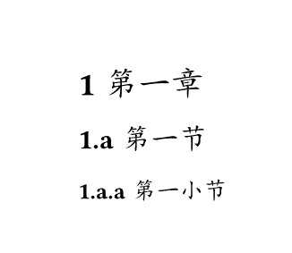
创建标题
#heading[一级标题]
#heading(level: 2)[二级标题]
#heading(level: 3)[三级标题]
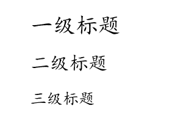
其他页面元素
有了page()和par()和heading()的经验，其他文档元素函数的用法大致类似，一个是用来设定文档元素的样式，一个是用来创建文档元素的实例。
目录outline()
outline()函数用于生成整个文档或者图表等其他元素的目录。
outline(
title: none auto content, // 目录标题
target: label selector function, // 目录所对应的文档元素，默认：heading.where(outlined: true)
depth: none int, // 目录深度，最大标题级别
indent: none auto bool relative function, // 缩进
fill: none content, // 条目和页码之间的填充，默认：repeat(body: [.])
) -> content
#outline() // 生成文档目录
#pagebreak() // 换页
// 文档正文
#heading[一级标题]
#heading(level: 2)[二级标题]
#heading(level: 3)[三级标题]
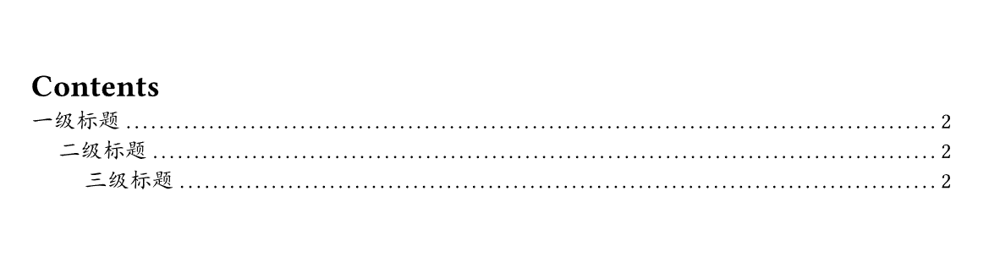
可以看到目录的默认标题为英文的“Contents”,通过设定text()函数的语言选项为中文，目录标题将自动切换为中文的“目录”。其他语言类似。
#set text(lang: "zh") // 设定整个文档语言为中文
#outline() // 生成文档目录
#pagebreak() // 换页
// 文档正文
#heading[一级标题]
#heading(level: 2)[二级标题]
#heading(level: 3)[三级标题]
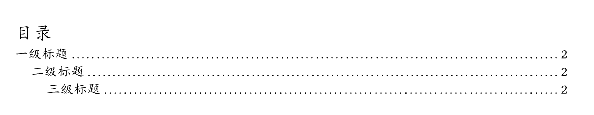
或者可以直接设定outline()的title属性。并可以基于内容块形式设定居中。
#outline( // 生成文档目录
title:[
#block(
width:100%
)[
#align(center)[目录]
]
]
)
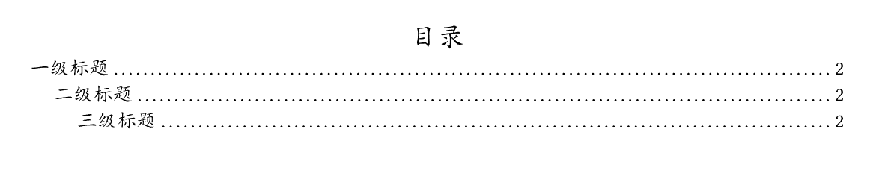
引用quote(）
quote(
block: bool, // 是否为块引用，默认：false
quotes: auto bool, // 是否为引用内容添加双引号，默认：auto，行内添加，块级不添加
attribution: none label content, // 引文的署名，通常是作者或来源。
body:content, // 引文内容
) -> content
Typst将引用分为“行内引用”和“块级引用”。
这里是正文，#quote(attribution: "巽星石")[我石耳鼻]，这里是后面的内容。
#quote(
attribution: "巽星石",
block: true // 设为块级引用
)[我石耳鼻]
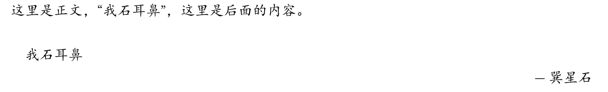
脚注
footnote()用于创建脚注，脚注会在每页页脚区域自动编号并显示脚注内容。
footnote(
numbering: str function, // 脚注的编号形式
body:label content, // 脚注内容
) -> content
日常使用时，脚注只需要使用#footnote[脚注内容]形式添加到正文任意位置即可：
#page(
width: 8cm,height: 5cm
)[
这里是脚注的示例#footnote[这里是脚注的内容]
]
为了演示的方便，这里建了一个宽8cm，高5cm的小页面进行演示：
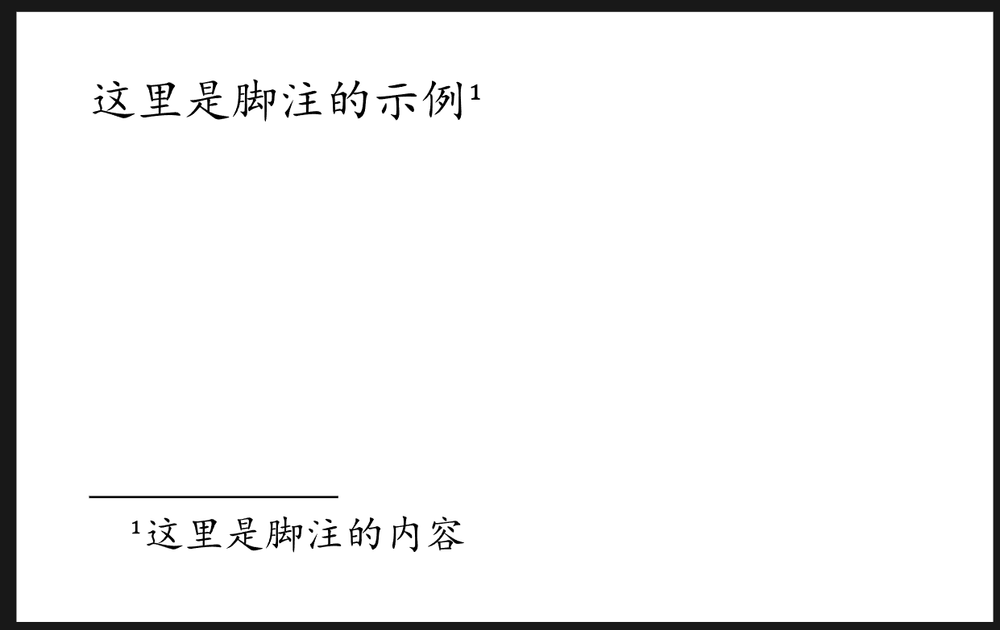
自定义脚注列表
可以在文档的开头定义 footnote.entry 的 set 和 show 规则，对脚注的条目样式进行统一设置。
footnote.entry(
note:content,
separator: content, // 文档正文和脚注列表之间的分隔符，默认：1em
clearance: length, // 文档正文和分隔符之间的间距，默认：0.5em
gap: length, // 脚注条目之间的间距，默认：0.5em
indent: length, // 脚注条目的缩进量，默认：1em
) -> content
标签label()和引用site()
标签可以使用<标签名>或#label("标签名")形式创建，需要添加到标记元素的后面，且紧邻。
#figure(
caption: "typ:标记模式",
)[
```typ
= 123
== 234
=== 456
`123`
#set page()
]
这里是引用：#ref()

## 无序列表list()
```swift
list(
tight: bool, // 列表项是否紧凑排列，默认：true
marker: content array function, // 列表项的标记
indent: length, // 列表项的缩进值，默认：0pt
body-indent: length, // 标记与列表项正文之间的间距，默认：0.5em
spacing: auto relative fraction, // 宽（非紧密）列表的项之间的间距
children: content, // 具体的列表项
) -> content
list.item(
content
) -> content
// 使用for循环创建列表
#for zm in "ABC" [
- 字母 #zm
]
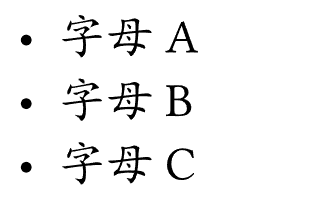
// 使用list()函数设定
#list[1][2][3]
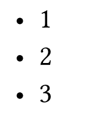
// 使用 list.item 设定
#list(
list.item[1],
list.item[2],
list.item[3]
)
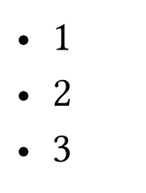
有序列表enum()
enum(
tight: bool, // 列表项是否紧凑排列，默认：true
numbering: str function, // 设置编号的模式，默认："1."
start: int, // 开始编号，默认：1
full: bool, // 是否显示完整编号，包括父列表的编号
indent: length, // 列表项的缩进值，默认：0pt
body-indent: length, // 标记与列表项正文之间的间距，默认：0.5em
spacing: auto relative fraction, // 宽（非紧密）列表的项之间的间距
number-align: alignment, // 编号的对齐方式，默认：end + top
children：content array, // 具体的列表项
) -> content
enum.item(
number: none int, // 编号
body: content, // 内容
) -> content
+ 列表项1
+ 列表项1.1
+ 列表项2
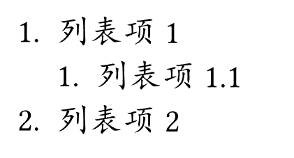
#enum(
enum.item(1)[1],
enum.item(2)[2],
enum.item(3)[3],
)
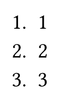
#enum[1][2][3]
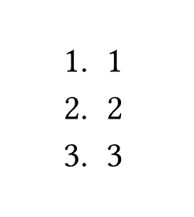
#enum(
start: 3
)[1][2][3]
或者：
#enum(
start: 3,
[1],
[2],
[3]
)
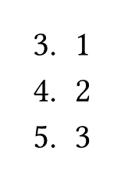
#set enum(numbering: "1.a",full: true)
+ 列表项1
+ 列表项1.1
+ 列表项2
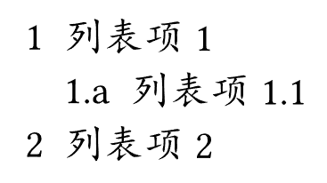
图片image()
image(
path:str, // 图片文件路径
format: auto str, // 图片格式
width: auto relative, // 图片宽度，默认：aoto
height: auto relative, // 图片高度，默认：aoto
alt: nonestr, // 图片描述
fit: str, // 图片的自适应方式，默认："cover"
) -> content
image.decode(
data:str bytes, // 要解码为图像的数据,可以是SVG的字符串
format: auto str, // 图片格式
width: auto relative, // 图片宽度，默认：aoto
height: auto relative, // 图片高度，默认：aoto
alt: nonestr, // 图片描述
fit: str, // 图片的自适应方式，默认："cover"
) -> content
fit的值：
| fit值 | 描述 |
|---|---|
| “cover” | 图像应完全覆盖该区域。这是默认设置。 |
| “contain” | 图像应完全包含在该区域中。 |
| “stretch” | 应拉伸图像，使其完全填充该区域，即使这意味着图像将失真。 |
代码raw()
raw()代表可以进行语法高亮或背景高亮的行内代码或代码块。
raw(
text:str, // 代码内容
block: bool, // 是否为代码块，默认：false
lang: none str, // 代码语言
align: alignment, // 代码块内容的对齐方式，默认：start
syntaxes: str array, // 语法定义
theme: none str, // 用于语法高亮的主题，默认：none
tab-size: int, // 一个Tab键等于的空格数，默认：2
) -> content
```html
<h1>这里是H1</h1>
<hr>
这里是正文
typ和typc
Typst的代码可以使用typ或typc作为其语言名称。其中：
typ为标记模式typc为脚本模式
```typ
= 123
== 234
=== 456
`123`
#set page()
```
```typc
= 123
== 234
=== 456
`123`
#set page()
```
两者在显示标记和Typst脚本上有所差别：
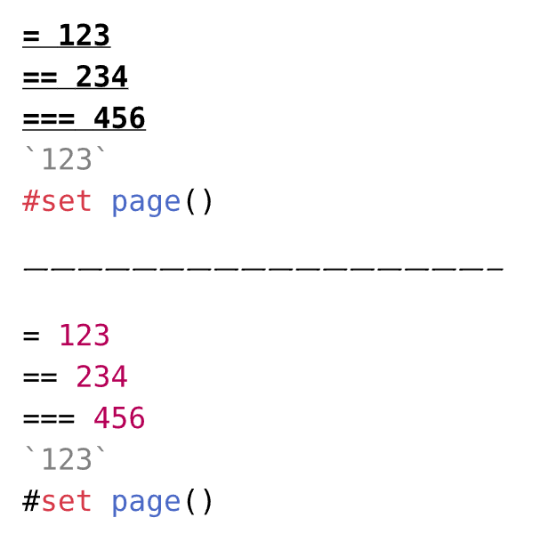
为代码添加标题
代码块也可以包裹在figure()中，并为其创建计数和标题。
#figure(
caption: "typ:标记模式"
)[
```typ
= 123
== 234
=== 456
`123`
#set page()
```
和图片以及表格一样，包裹figure()后，内容就会在行中居中显示：
设定行内代码和代码块的样式
下面是我自己琢磨出来的样式：
// 行内代码
#show raw.where(block: false):it =>[
#box(
fill: rgb("#ececec"),
inset: 2pt,
outset: 2pt,
radius: 2pt,
stroke: rgb("#dcdcdc") + 1pt,
baseline: 20%,
it
)
]
// 代码块
#show raw.where(block: true):it =>[
#align(left)[
#block(
fill: rgb("#ececec"),
width:100%,
inset: 10pt,
radius: 5pt,
stroke: rgb("#dcdcdc") + 1pt,
it
)
]
]
实际效果还可以：
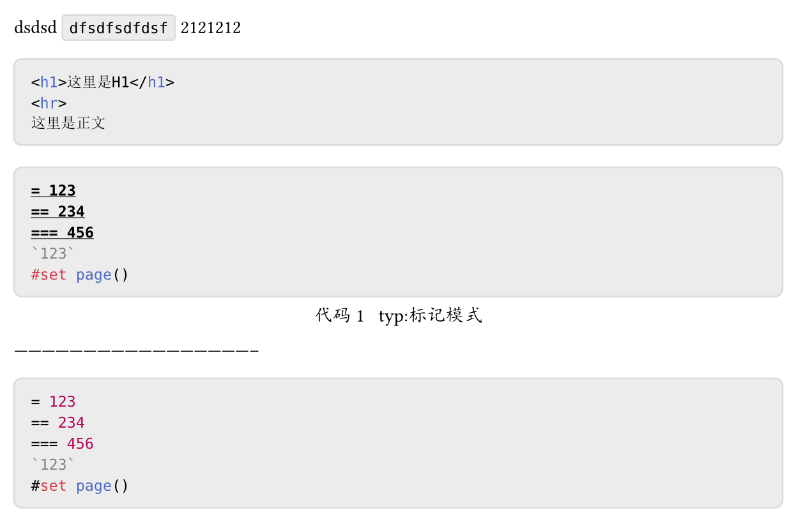
代码行样式设定
文档没有示例，不太清楚具体的设定方法。
raw.line(
number:int, // 行号（从1开始）
count:int, // 代码块中的总行数
text:str, // 文本
content, // 高亮显示的原始文本
) -> content
表格table(）
table(
columns: auto int relative fraction array, // 列数或列设置
rows: auto int relative fraction array, // 行数或行设置
gutter: auto int relative fraction array, // 行和列间隙
column-gutter: auto int relative fraction array, // 行间隙
row-gutter: auto int relative fraction array, // 列间隙
fill: none color gradient array pattern function, // 单元格填充
align: auto array alignment function, // 单元格内容对齐方式
stroke: none length color gradient stroke pattern dictionary, // 边框样式，默认：1pt + black
inset: relative dictionary, // 内边距 默认：5pt
children：content, // 具体表格数据
) -> content
#table(
columns: 3,
[1],[2],[3],
[4],[5],[6]
)
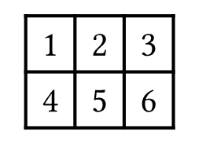
#table(
columns: 3, // 三列表格
gutter: 3pt, // 行列间距为3pt
stroke: red+1pt, // 描边为1pt红色
[1],[2],[3],
[4],[5],[6]
)
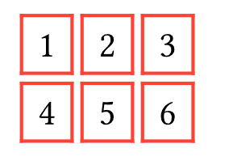
图表figure()
figure()主要用于对图片、表格或者其他内容进行标记，并自动创建序号，并且可以设定标题等。
figure(
body:content, // 内容，通常为图片、表格
placement: none auto alignment, // 图片在页面上的放置位置，默认：none
caption: none content, // 标题，默认：none
kind: auto str function, // 图表的种类，相同类型共用一个计数器
supplement: none auto content function, // 和序号标题一起显示的图表类型名称
numbering: none str function,
gap: length,
outlined: bool,
) -> content
#figure(
caption: "表格实例1"
)[
#table(
columns: 3, // 三列表格
gutter: 3pt, // 行列间距为3pt
stroke: red+1pt, // 描边为1pt红色
[1],[2],[3],
[4],[5],[6]
)
]
figure()的标题默认会以“图表的类型名 类型计数：标题”形式展示。
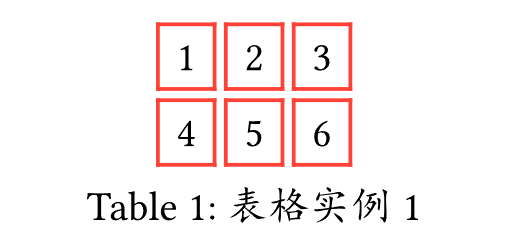
可以通过supplement参数指定中文形式，或者通过设定整个文档的语言为中文，实现自动的中文类型名。
#set text(lang: "zh") // 设定整个文档语言为中文
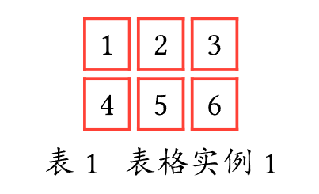
中文随机内容的填充
通过lorem()可以创建用于暂时填充的英文文本，但是有些时候，我们跟多的需要填充中文内容我们可以利用字符串的特性，给一个字符串乘以一个倍数来重复它：
#("这是一段用作填充的文字。" *5)
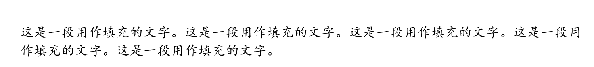
我们可以简单的编写一个函数来重复调用。
#let lorem_zh(time) = {"这是一段用作填充的文字。" * time}
#lorem_zh(5)